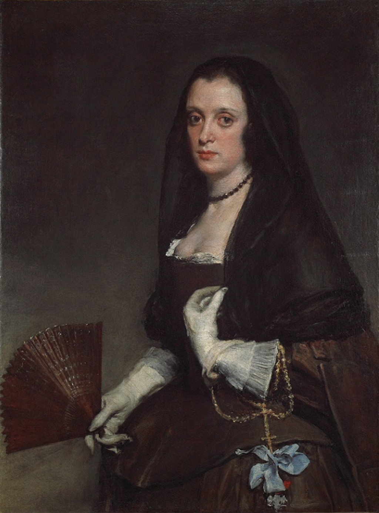

<head>
<meta charset="UTF-8" />
<meta name="keywords" content="drawing, painting" />
<meta name="description" content="drawings by Sunjy" />
<title>Sunjy</title>
<link rel="shortcut icon" type="image/x-icon" href="../../mImages/mCommon/favicon.ico" media="screen" />
<link rel="stylesheet" type="text/css" href="../../mCsses/mCommon/mCssA.css" />
<link rel="stylesheet" type="text/css" href="../../mCsses/mCommon/mCssB.css" />
<link rel="stylesheet" type="text/css" href="../../mCsses/mCommon/mCssC.css" />
<link rel="stylesheet" type="text/css" href="../../mCsses/mCommon/mCssD.css" />
<link rel="stylesheet" type="text/css" href="../../mCsses/mContent/mCssA.css" />
<link rel="stylesheet" type="text/css" href="../../mCsses/mContent/mCssB.css" />
<link rel="stylesheet" type="text/css" href="../../mCsses/mContent/mCssC.css" />
<link rel="stylesheet" type="text/css" href="../../mCsses/mContent/mCssD.css" />
</head>
<script type="text/javascript" src="../../mScripts/mContent/mContentAA.js" /></script>
<script type="text/javascript" src="../../mScripts/mContent/mContentAB.js" /></script>
<script type="text/javascript" src="../../mScripts/mContent/mContentAC.js" /></script>
<script type="text/javascript" src="../../mScripts/mContent/mContentAD.js" /></script>
<script type="text/javascript"></script> 
<script type="text/javascript">
document.write('<div class="mImgAbsolute"></div>');
/*
document.write('<p class="mFontSizeBColor" />From a white paper...</p>');
document.write('<table class="center"><tr><td>');
document.write('');
document.write('</td></tr></table>');
*/
</script>


<script type="text/javascript">
document.write('<p class="mFontSizeBColor" />The Lady with a Fan</p>');
document.write('<p class="mFontSizeSColor" />“The Lady with a Fan” by Diego Velázquez depicts a woman wearing a black lace veil on her head and a dark dress with a low-cut bodice.<br><br>It is an enigmatic portrait as there is no documentary information about the portrait; the sitter’s identity has not yet conclusively been verified.<br><br>Most other Velázquez portraits are recognizable likenesses of the members of the Spanish royal family, their courtiers, and court servants.<br><br>The details of the costume suggest that the sitter could be Marie de Rohan, the Duchess of Chevreuse, as she is dressed according to the French fashion of the period.<br><br>There is documented evidence that Velázquez painted a Frenchwoman, in a letter dated 1638. Velázquez claims to have portrayed the exiled Duchess of Chevreuse, who was then living in Madrid under the protection of the King.<br><br>The letter claims that the Duchess had escaped from France disguised as a man. However, other experts argued at the features of the sitter differ remarkably from other images of the Duchess.<br></p>');
document.write('<table class="center" /><tr><td>');
document.write('<br>It is an enigmatic portrait as there is no documentary information about the portrait; the sitter’s identity has not yet conclusively been verified.<br><br>Most other Velázquez portraits are recognizable likenesses of the members of the Spanish royal family, their courtiers, and court servants.<br><br>The details of the costume suggest that the sitter could be Marie de Rohan, the Duchess of Chevreuse, as she is dressed according to the French fashion of the period.<br><br>There is documented evidence that Velázquez painted a Frenchwoman, in a letter dated 1638. Velázquez claims to have portrayed the exiled Duchess of Chevreuse, who was then living in Madrid under the protection of the King.<br><br>The letter claims that the Duchess had escaped from France disguised as a man. However, other experts argued at the features of the sitter differ remarkably from other images of the Duchess.<br>" />');
document.write('</td></tr></table>');
</script>


